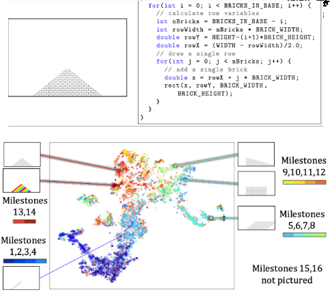
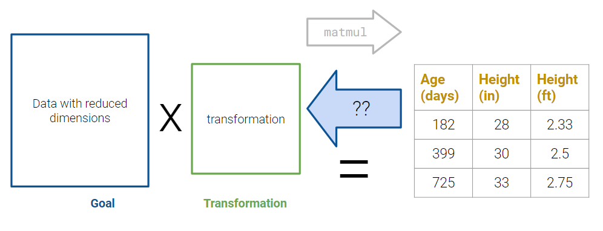
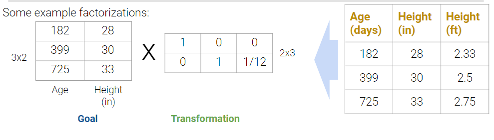
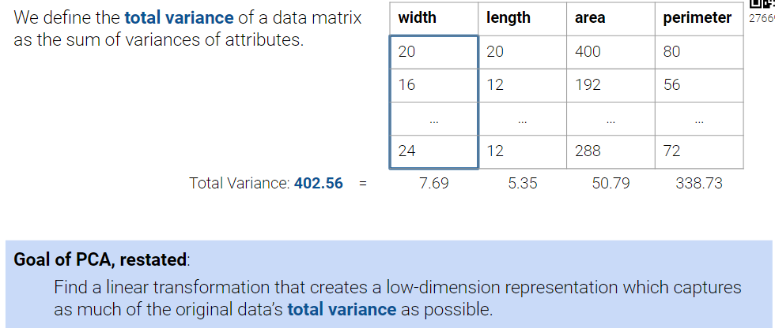
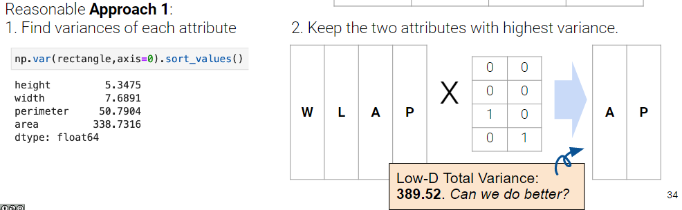
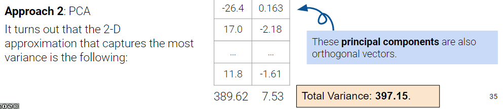

25 PCA I
25.1 Unsupervised Learning
In “Supervised Learning”, our goal is to create a model that maps inputs to outputs.
Model is learned from example input/output pairs. Each pair consists of:
- Input vector.
- Output value (label).
We learned two supervised learning methods so far.
Regression: Output value is quantitative.
Classification: Output value is categorical.
Now, we will move into “Unsupervised Learning”, where our goal is to identify patterns in unlabeled data. We do not have input/output pairs. Note: Sometimes we may have labels, but we choose to ignore them.
25.1.1 Dimensionality Reductions
Suppose we wanted to study how students worked through an introductory CS assignment, where they have to draw a pyramid using graphics and blocks.

A researcher has already labeled all “assignment snapshots” as one of 16 different “milestones” of the program. How can we visualize how similar/close the snapshots are on a 2-D plane?
Problem: Each image is 800 x 600 = 480k pixels. This is a lot of features, but visualizations are usually 2-D. Past 3 dimensions is hard to perceive meaningfully.
Solution: Dimensionality reduction to 2-D space.
Principal Component Analysis (PCA) is a linear technique for dimensionality reduction.
PCA relies on a linear algebra algorithm called Singular Value Decomposition.
25.1.2 Dimensionality of Data (Linear Algebra)
Previously, we have been working with data tables with rows and columns. These rows and columns corresponded to observations and attributes about said observations. Now, we have to be a bit more clear with our wording to follow the language of linear algebra.
Suppose we have a dataset of: - N observations (datapoints/rows) - d attributes (features/columns).
In Linear Algebra, we think of data being a collection of vectors. Vectors have a dimension, meaning they have some number of unique elements. Row and column now denotes the direction a vector is written (horizontally, like a row, or vertically, like a column):
Linear Algebra views our data as a matrix: - N row vectors in a d-Dimensions, OR - d column vectors in an N-Dimensions.
Dimensionality of data is a complex topic. Sometimes, it is clear from looking at the number of rows/columns, but other times it is not.

For example, the dataset below we can see that while there is 4 columns, the Weight (lbs) actually just a transformation of the Weight (kg) column. Thus, no new information is captured

Plotting the weight columns together reveals the key visual intuition. While the two columns visually span a 2-d space as a line, the data does not deviate at all from that singular line. This means that one of the weight columns are redundant! Even given the option to cover the whole 2d space, the data below does not. It might as well not have this dimension, which is why we still do not consider the data below to span more than 1 dimension.

25.1.3 Matrix Decomposition
How can we get rid of the non-essential parts of our matrix? One overarching idea is to break the matrix into a smaller matrix through clever matrix multiplication. This is called matrix decomposition.
25.1.3.1 Matrix Multiplication

The first view of matrix multiplication we saw when working with linear models is the data and operations view.

However, another more linear algebra centric perspective is the columns and transformations view. The columns of the left matrix are being transformed according to the rules specified by the right matrix. We highly recommend watching this video for some neat animations.

So now that we have a broader idea of what matrix multiplication does, we can formulate a plan with which to reduce our matrix down to its essential dimensions.

Matrix decomposition (a.k.a. Matrix Factorization) is the opposite of matrix multiplication, i.e. taking a matrix and decomposing it into two separate matrices.
Just like with real numbers, there are infinitely many such decompositions.
Example: \(9.9 = 1.1 * 9 = 3.3 * 3.3 = 1 * 9.9 = ...\)
Matrix sizes introduce even more room for differences in decomposition.

25.1.4 Limited by Rank
One key fact to remember is that the decomposition are not arbitrary. The rank of a matrix limits how small our inner dimensions can be if we want to perfectly recreate our matrix. The proof for this is out of scope.
25.1.5 Automatic Factorization
Even if we know we have to factorize our matrix using an inner dimension of R, that still leaves a large space of solutions to traverse. What if we have a procedure to automatically factorize a rank R matrix into an R dimensional representation with some transformation matrix?
Lower dimensional representation avoids redundant features.
Imagine a 1000 dimensional dataset: If the rank is only 5, it’s much easier to do EDA after this mystery procedure.
What if we wanted a 2-D representation? Its valuable to compress all of the data that is relevant onto as few dimensions as possible in order to plot it efficiently. Some 2D matrices yield better approximations than others. How well can we do?
25.2 Principle Component Analysis
Goal: Transform observations from high-dimensional data down to low dimensions (often 2) through linear transformations.
Related Goal: Low-dimension representation should capture the variability of the original data.

Dimensionality reductions can also aid in Exploratory Data Analysis:
- Visually identify clusters of similar observations in high dimensions.
- You are still exploring the data (if you already know what to model, you probably don’t need PCA).
- You have reason to believe the data are inherently low rank, e.g., There are many attributes but only a few mostly determine the rest through linear associations.
Why two dimensions? Most visualizations are 2-D, so it makes it easy to choose the two axes on which to plot datapoints. Furthermore, there is a hypothesis that most high dimensional data lives in low-dimensional manifolds.
25.2.1 Capturing Total Variance
Variability of the data is the most important aspect that we want to maintain. It is the bulk of what we care about when we conduct EDA and modeling. Thus, oversimplifying the data may lead to incorrect analyses.
Variance for a matrix is defined as the sum of the variances of the columns of a matrix.

One approach is to simply keep the columns with the most variability. However, this leads to capturing of a small amount of variability present in our original dataset. Can we do better than just taking two columns from the original matrix?

It turns out that PCA does a better job at preserving our variances. This is one of the best techniques for dimensionality reductions when it comes to preserving variances. Let’s dig into how it works!

25.2.2 PCA vs. SVD
Principle Component Analysis PCA and Singular Value Decomposition can be easily mixed up, especially when you have to keep track of so many acronyms. Here is a quick summary:
PCA: a data science procedure used for dimensionality reduction that uses SVD as one of the steps.
SVD: a linear algebra algorithm that splits a matrix into 3 component parts.
25.2.3 PCA Procedure
Center the data matrix by subtracting the mean of each attribute column.
Use SVD to find all \(v_i \in \{1...k\}\), the principal components, which fulfills the following criteria:
- \(v_i\) is a unit vector that linearly combines the attributes.
- \(v_i\) gives a one-dimensional projection of the data.
- \(v_i\) is chosen to minimize the sum of squared distances between each point and its projection onto v.
- \(v_i\) is orthogonal to all previous principal components.
references for SVD: EECS 16B Note 14, EECS 16B Note 15
25.2.4 SVD
Singular value decomposition (SVD) is an important concept in linear algebra.
- We assume you have taken (or are taking) a linear algebra course.
- We will not explain SVD in its entirety—in particular, we will not prove:
- Why SVD is a valid decomposition of rectangular matrices
- Why PCA is an application of SVD.
- We know SVD is not covered in EECS 16A, nor Math 54 this semester.
We will not go much into the theory and details of SVD. Instead, we will only cover what is needed for a data science interpretation.

In NumPy, this algorithm is already written and can be called with np.linalg.svd.
25.3 Data Variance and Centering
Formally, the i-th singular value tells us the component score, i.e., how much of the data variance is captured by the ith principal component. Supposing the number of datapoints is \(n\):
\[\text{i-th component score} = \frac{(\text{i-th singular varlue}^2}{n}\]
Summing up the component scores is equivalent to computing total variance.
Data Centering: PCA has a data centering step that precedes any singular value decomposition, where if implemented defines the component score as above.
25.4 Proof of component score (out of scope)
The proof defining component score out of scope for this class, but it is included below for your convenienve.
Setup: Consider the design matrix \(X \in \mathbb{R}^{n \times d}\), where the \(j\)-th column (corresponding to the \(j\)-th feature) is \(x_j \in \mathbb{R}^n\) and the element in row \(i\), column \(j\) is \(x_{ij}\). Further define \(\tilde{X}\) as the centered design matrix. The \(j\)-th column is \(\tilde{x}_j \in \mathbb{R}^n\) and the element in row \(i\), column \(j\) is \(\tilde{x}_{ij} = x_{ij} - \bar{x_j}\), where \(\bar{x_j}\) is the mean of the \(x_j\) column vector from the original \(X\).
Variance: Construct the covariance matrix: \(\frac{1}{n} \tilde{X}^T \tilde{X} \in \mathbb{R}^{d \times d}\). The \(j\)-th element along the diagonal is the variance of the \(j\)-th column of the original design matrix \(X\):
\[\left( \frac{1}{n} \tilde{X}^T \tilde{X} \right)_{jj} = \frac{1}{n} \tilde{x}_j ^T \tilde{x}_j = \frac{1}{n} \sum_{i=i}^n (\tilde{x}_{ij} )^2 = \frac{1}{n} \sum_{i=i}^n (x_{ij} - \bar{x_j})^2\]
SVD: Suppose singular value decomposition of the centered design matrix \(\tilde{X}\) yields \(\tilde{X} = U \Sigma V^T\), where $U ^{n d} $ and \(V \in \mathbb{R}^{d \times d}\) are matrices with orthonormal columns, and \(\Sigma \in \mathbb{R}^{d \times d}\) is a diagonal matrix with singular values of \(\tilde{X}\).
\[\begin{aligned} \tilde{X}^T \tilde{X} &= (U \Sigma V^T )^T (U \Sigma V^T) \\ &= V \Sigma U^T U \Sigma V^T & (\Sigma^T = \Sigma) \\ &= V \Sigma^2 V^T & (U^T U = I) \\ \frac{1}{n} \tilde{X}^T \tilde{X} &= \frac{1}{n} V \Sigma V^T =V \left( \frac{1}{n} \Sigma \right) V^T \\ \frac{1}{n} \tilde{X}^T \tilde{X} V &= V \left( \frac{1}{n} \Sigma \right) V^T V = V \left( \frac{1}{n} \Sigma \right) & \text{(right multiply by }V \rightarrow V^T V = I \text{)} \\ V^T \frac{1}{n} \tilde{X}^T \tilde{X} V &= V^T V \left( \frac{1}{n} \Sigma \right) = \frac{1}{n} \Sigma & \text{(left multiply by }V^T \rightarrow V^T V = I \text{)} \\ \left( \frac{1}{n} \tilde{X}^T \tilde{X} \right)_{jj} &= \frac{1}{n}\sigma_j^2 & \text{(Define }\sigma_j\text{ as the} j\text{-th singular value)} \\ \frac{1}{n} \sigma_j^2 &= \frac{1}{n} \sum_{i=i}^n (x_{ij} - \bar{x_j})^2 \end{aligned}\]
The last line defines the \(j\)-th component score.